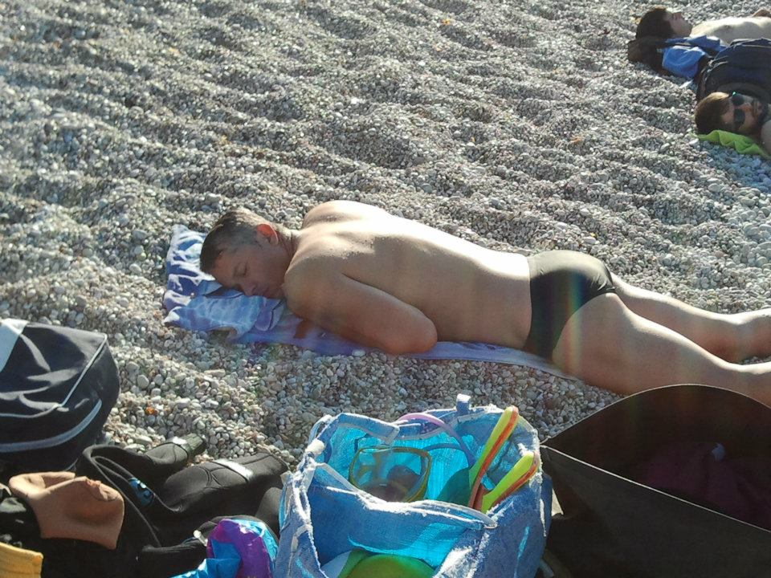
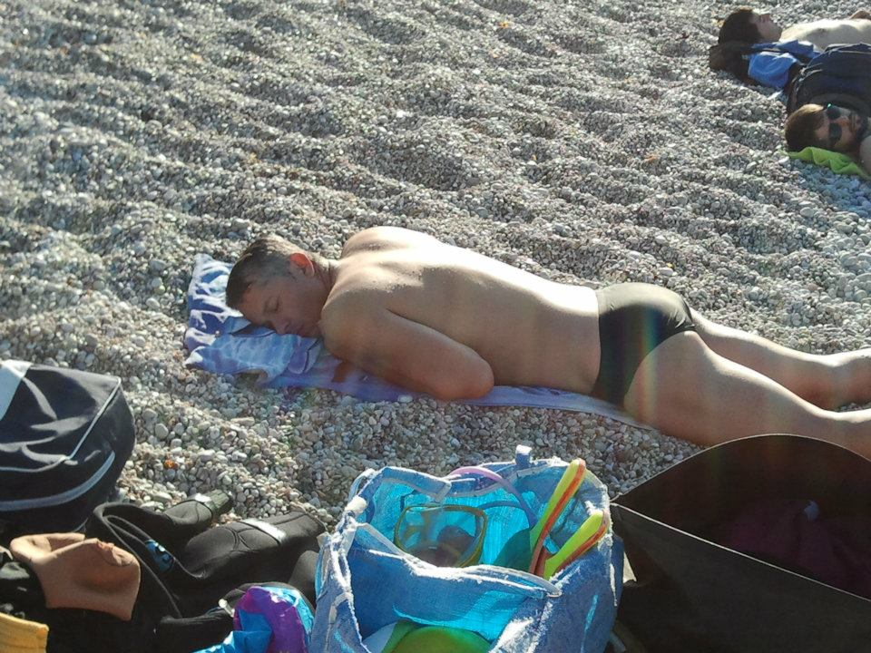

Aujourd'hui: 21 mai 2020, mon papa a 50 ans!
Message de Youwoupa:
Quand j'étais petite mon papa me faisait des labyrinthes sur son ordinateur du travail,
même que je me souviens ça m'est arrivé plusieurs fois d'éteindre son ordinateur et il était pas
content du tout du tout!!!
Depuis quelques semaines, j'ai appris à coder, les bases surtout, je ne peux pas parler de maîtrise
mais je me débrouille et je découvre tout plein de nouvelles choses!
Et crois moi, ce "site" est un cadeau pour toi mais pour moi aussi, je suis trop contente d'être rentrée dans ton monde
et de pouvoir en parler, que tu m'aides et que tu me conseilles pour que je sois encore plus forte.
Je t'aime et je te souhaite un joyeux anniversaire Goulgoulout!
Pour la suite, appuie sur ce
Message de ton Pilou:
Aujourd’hui c’est l’anniversaire du papa de pilou si beau si doux !!
C’est mon papa !
Avant il nous faisait des couettes et il nous mettait du vernis pour qu’on soit toutes jolies !
Quand on était fatigués de marcher, on avait qu’à dire la formule magique « oupa » et hop on se retrouvait au carré VIP avec vue panoramique
sur ses épaules (jusqu’à ce qu’on grandisse, ou plutôt qu’il prenne de l’âge, car évidement toutes
les bonnes choses ont une fin donc on a dû marcher comme tout le monde).
Mais il continue d'être le meilleur papa du monde ( enfin, depuis que je le connais en tout cas ).
Alors aujourd’hui si tu veux mon papa je peux partager ma chanson avec toi :
« MON PAPA SI BEAU SI DOUX, MON PAPA, MON PAPA, MON PAPA SI BEAU SI DOUX »
voilà voilà mon papa je te souhaite un super mégatesque anniversaire !! Je t’aime tout plein !!
Ta pilou qui te fait des bisoux !!
Message de Léo:
Flouppou caca,
Alois mor je sas puis spécialement tonquent carcque te mu faisais pes da pitites couettes,
mi sais je me vousiens bi1, lous tes soirs da me pitite anfence llave loi dret à 1 PIKOTÉ.
Mes effectivement lais chonnes boses ont joutours une f1.(Comme toi d’ailleurs tellement que u finissait les plats de Maorte).
Jais me me vousi1 qua pe çe da, me je vousi1 issO dou felfes quoi es fu à louvus de monner ma lort,
voui darticulièrement pevant Mean Joulin et qu’on chouait à ja.. bref même ti s’es viE peduis selque quix ans avant moA l’es me yemeur mappa du flonde.
Bijous et zou..!
Yoizeuje yevesse Flappa 50 sna !!
Message de ta belle-fille préférée:
Joyeux anniversaire mon beau beau papa préféré (oui parce que j'ai déjà un beau père mais le beau beau il est forcément préféré) !
On est pas là pour le souhaiter tous ensemble mais le cœur y est!
On se rattrapera cet été avec des barbecues et des apéros tous ensemble!
50 ans faut pas passer à côté de ça! Je suis en tout cas heureuse d’être dans la famille Langlais
pour pouvoir fêter un âge si important avec toi!
PS : Merci de me prêter bientôt pour toute la vie le nom de famille d’ailleurs 😁 😉
Message de Corazon(A):
Mon Corazon,
Rien ne nous prédestinait à nous rencontrer, sortir ensemble, fonder une famille et tout simplement vivre ensemble.
Je suis née loin loin dans un beau continent tout neuf et tout fou et toi dans le vieux continent tout vieux et tout sage nous étions si différents,
Tu aimais le chaud, moi j'aimais le froid, tu voulais partir visiter les hommes bleus et moi les fjords du nord!
Tu fumais des gauloises et des gitanes moi pas
Tu buvais du whisky, moi non mais mon premier verre de vin blanc c'était avec toi sur les Champs Elysées!
J'avais toujours crié, tu as toujours raisonné,
Tu aimais les chats, j'en avais peur,
J'ai toujours rigolé et positivé, toi toujours calculé et préparé comme quand on partait en vacances et que tu connaissais déjà tout avant même de quitter la maison!
Je déteste me perdre toi tu découvres (pfff n'importe quoi)
Mais heureusement que Ikea était là pour nous aider à nous rencontrer, je t'ai proposé de faire un bout de chemin ensemble et je t'ai tendu deux bols jaunes pour te dire que vivre à deux ça pouvait être rigolo, un petit déj (ah oui tu ne mangeais pas à cette l'époque ) faire des courses et choisir ensemble, cuisiner ensemble...
Tu as pris le paris et nous voilà aujourd'hui nous sommes devenus grands ensemble, petit à petit tu as mis de l’eau dans ton vin moi j'ai mis du vin dans mon eau,
Tu ne fume plus je ne fume toujours pas,
Tu bois toujours du whisky j'en bois maintenant avec toi,
Nous aimons et détestons maintenant tous les deux à la fois le chaud et le froid,
Et nous avons même deux chats!
Les jours, les mois, les années sont passées et nous sommes toujours là (et les bols aussi) nous nous sommes mêmes reproduits trois fois exactement oh oui oui oui; trois petits êtres bien singuliers qui chaque jour depuis qu'ils sont là nous rappellent qui'il aurait était bien dommage de ne pas tenter cette aventure.
Maintenant ils sont grands ou presque on les voit évoluer grandir.
Nous continuons notre chemin la main dans ma main avec notre jardin, nos poules, ta guitare tous les soirs (je la préfère au saxo car je peux m'endormir avec)
Je ne suis pas facile tu ne l'es pas non plus
Alors comme tout va bien mon Corazon je te propose de continuer encore un bon bout de chemin,
Aujourd’hui c'est ton anniversaire 50ans whouah!!! le demi siècle, ne t'inquiète pas j'y arrive aussi et lorsque j'y serai j'aurais passé ma moitié de ma vie avec toi!
Feliz cumpleanos mon Corazon
Message de ta maman:
Mon Grand
Je viens de regarder les photos de ta naissance et de ce grand bonheur qui l'accompagnait.
J'ai aussi revu celle prise dans le jardin à Montesson - tu avais 2 ans 1/2 - tu arrosais les plantes,
les fesses à l'air, avec ton petit arrosoir avec sa grosse cerise rouge que j'ai gardé longtemps
même à la Chevalerie !
Et puis il y a tant de flashes qui m'assaillent et me bousculent et cette question incontournable
qui se pose : où sont passées ces 50 années ?
Heureusement Angela et toi avez jalonné ces années avec les plus beaux cadeaux qui puissent exister:
IRIS, LILA ET LEO. Merci !
Malheureusement je ne suis pas près de toi pour te dire BON ANNIVERSAIRE mais toutes mes pensées sont pour toi.
Avec tout mon immense amour.
Maman
Message de Tagada:
Salutations !!!
Comme je sais que tu va être avec ta chérie, tes enfants et peut-être ton beau frère et sa copine.
Je voudrais profiter de l’occasion pour te dire deux ou trois petites choses!!!
Déjà feliz cumpleaños. Et après, il faut que tu continues au moins, au moins!!!!! 70 ans de plus!!!!!
Tu dois être fier de tes petits génies que tu as formaté.
Ils sont géniaux !!! Et je te dis que tu peux bien dormir bien sur tes deux oreilles !!!
Et ensuite que ces 70ans qu'il te reste pour circuler sur la terre, tu vas voir; tu vas les voir différemment !!!
Je te souhaite un très joyeux Anniversaire et profite avec ta famille la beauté de ton séjour sur La Terre.
Je t’embrasse treeees fort
Magda
Message de Tio:
Joyeux anniversaire à toi « le frère que je n’ai jamais eu » et qui depuis que tu partages ta vie avec ma sœur,
m’a tant appris et tant apporté.
Alors encore une fois, joyeux anniversaire Bello Hermano. Merci d’être une source d’inspiration et une voix de la raison en même temps.
Alors une dernière fois,
JOYEUX ANNIVERSAIRE MON FRÈRE.
Message de Chantal:
Bonjour Petit Prince !
Certes, il a vieilli ce petit prince de Yanou, il paraît même qu'il a atteint un demi-siècle...
Mais dans son regard, je retrouve toujours cette même curiosité de tout connaître, cette empathie spontanée,
cette détermination qu'il affichait déjà tout petit (visible sur la photo, dans le jardin de Montesson, dont Liliane fait allusion).
50 ans ! Je repasse les différents moments vécus ensemble et
je me dis que j'ai plein de raisons de t'aimer et d'être fière de toi.
Du bout de chou à qui il fallait lire et relire le conte de ST EX et
qui posait 1000 questions sur tout, à l'écolier studieux et un peu
timide et sensible, au jeune homme qui a su faire ses choix et
les assumer, à celui qui est devenu le digne fils de son père,
je dis merci de m'avoir donné toutes ces petites joies qui font le
vrai bonheur.
Tu t'es écrié un triste 15 août :"Vive la vie, la vie est belle" et
cette phrase est en quelque sorte, ton credo.
Parce que tu aimes la vie, tu as toujours voulu voir le verre à
moitié plein et faire en sorte de le remplir
Parce que tu aimes l'autre, tu as su te construire une belle
famille (avec l'aide non négligeable d'Angela!) et transmettre
tes valeurs humanistes à ton entourage.
Aujourd'hui, Iris, Lila et Léo reprennent ton credo à leur compte
(du moins c'est ce que j'ai pu constater) et de cela tu peux être
fier (avec ton épouse) du bilan de ta vie d'Homme.
Alors bel et bon anniversaire mon (vieux) Petit Prince!